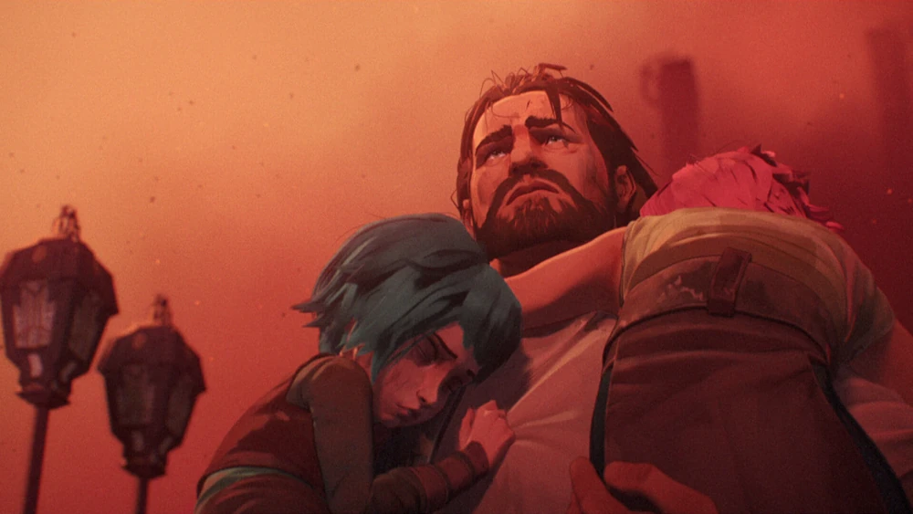
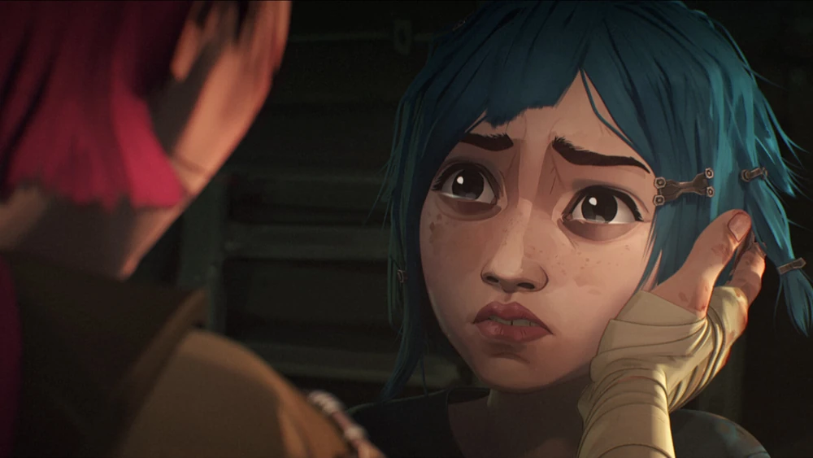

La primera temporada de "Arcane" está dividida en tres actos, cada uno con tres episodios:

Acto 1:
"Bienvenidos al patio de recreo"
Sinopsis: Introducción a las vidas de Vi y Jinx (Powder) en Zaun, mostrando su infancia y los eventos que llevan a la tragedia que las separa.
"Es mejor dejar algunos misterios sin resolver"
Sinopsis: La creciente tensión entre Piltover y Zaun se desarrolla mientras los personajes principales comienzan a establecer sus roles en la historia.
"La violencia básica necesaria para el cambio"
Sinopsis: La confrontación y el conflicto se intensifican, llevando a decisiones drásticas y al inicio de las rivalidades.
Acto 2:
"¡Feliz día del progreso!"
Sinopsis: Se celebra un importante evento en Piltover, mostrando los avances tecnológicos y los desafíos que estos conllevan.
"Todo el mundo quiere ser mi enemigo"
Sinopsis: La tensión entre Vi y Jinx se profundiza, con cada hermana enfrentando sus propios demonios internos y externos.
"Aceite y agua"
Sinopsis: La relación entre Piltover y Zaun se vuelve aún más complicada, con alianzas y traiciones emergentes en ambos lados.
Acto 3:
"El niño salvador"
Sinopsis: Revelaciones y confrontaciones clave entre personajes principales, con el pasado influyendo en las decisiones del presente.
"El monstruo que creaste"
Sinopsis: El conflicto llega a su clímax, con decisiones finales que cambiarán el destino de Piltover y Zaun.
| Imagen | Título y Descripción | Escrito por | Fecha de Emisión | Episodio |
|---|---|---|---|---|
|  | "Bienvenido al patio de juegos" Las hermanas huérfanas Vi y Powder traen problemas a las calles subterráneas de Zaun tras un atraco en el lujoso Piltover. |
Christian Linke y Alex Yee | Nov. 6, 2021 | 1x01 |
| "Es mejor dejar algunos misterios sin resolver" El inventor idealista Jayce intenta dominar la magia a través de la ciencia, a pesar de las advertencias de su mentor. El capo criminal Silco prueba una sustancia poderosa. |
Nick Luddington | Nov. 6, 2021 | 1x02 | |
|  | "La violencia básica necesaria para el cambio" Un enfrentamiento épico entre viejos rivales resulta en un momento fatídico para Zaun. Jayce y Viktor arriesgan todo por su investigación. |
Ash Brannon | Nov. 6, 2021 | 1x03 |
| "¡Feliz día del progreso!" Con Piltover prosperando gracias a su tecnología, Jayce y Viktor sopesan su próximo movimiento. Un rostro familiar resurge de Zaun para causar estragos. |
David Dunne | Nov. 13, 2021 | 1x04 | |
| "Todo el mundo quiere ser mi enemigo" La vigilante rebelde Caitlyn recorre la ciudad subterránea para rastrear a Silco. Jayce se pone en peligro al intentar erradicar la corrupción en Piltover. |
Amanda Overton | Nov. 13, 2021 | 1x05 | |
| "Cuando estos muros se derrumben" Un aprendiz entusiasta socava a su mentor en el consejo mientras una tecnología mágica evoluciona rápidamente. Con las autoridades en su búsqueda, Jinx debe enfrentarse a su pasado. |
Alex Yee | Nov. 13, 2021 | 1x06 | |
 |
"El niño salvador" Caitlyn y Vi encuentran un aliado en las calles de Zaun y se dirigen a una batalla frenética con un enemigo común. Viktor toma una decisión desesperada. |
Nick Luddington | Nov. 20, 2021 | 1x07 |
| "Aceite y agua" La heredera desheredada Mel y su madre visitante intercambian tácticas de combate. Caitlyn y Vi forjan una alianza improbable. Jinx experimenta un cambio sorprendente. |
Ben St. John y Mollie St. John | Nov. 20, 2021 | 1x08 | |
| "El monstruo que creaste" Peligrosamente cerca de la guerra, los líderes de Piltover y Zaun alcanzan un ultimátum. Pero un enfrentamiento fatídico cambia ambas ciudades para siempre. |
Christian Linke y Alex Yee | Nov. 20, 2021 | 1x09 |